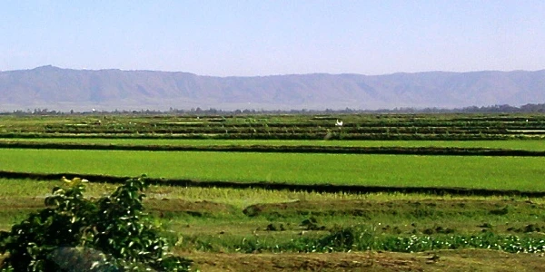
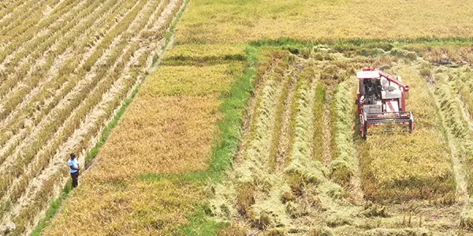

Mwea
Mwea, in Kirinyaga County, is a major rice-producing area. Irrigation supports rice cultivation, while farming and rice processing provide important economic activities for local communities.
Discover the regions where rice is cultivated and learn why water availability, irrigation, and local growing conditions matter.
Rice is grown in several parts of Kenya. Irrigation schemes have an important role in supporting production because rainfall alone may not provide enough water throughout the growing season.
Mwea in Kirinyaga County is one of Kenya's best-known rice-growing areas. Other important production areas include Ahero and West Kano in the Lake Victoria region, as well as Bunyala and parts of the Tana River region.
Mwea, in Kirinyaga County, is a major rice-producing area. Irrigation supports rice cultivation, while farming and rice processing provide important economic activities for local communities.

These rice-growing areas are located in the Lake Victoria region. Irrigation and water management help farmers grow rice in an environment where seasonal conditions influence agricultural activities.

The Bunyala irrigation area supports rice cultivation in western Kenya. Reliable water delivery, field preparation, and suitable crop management are important to production.
Knowing where rice grows is only part of the story. Explore the production stages and challenges farmers face.
Explore Rice Production